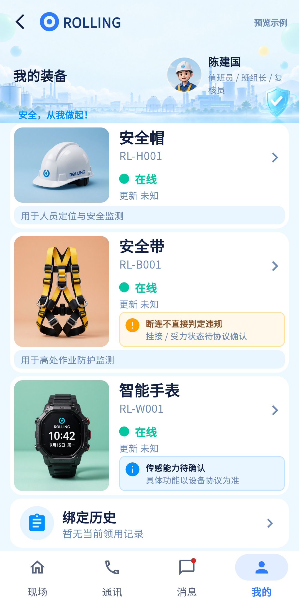

页面已存在且近期优化过，重点统一类型词典、真实装备与示例边界、历史摘要。
相同 · 已有基础
帽、带、表图卡，设备编号/连接态、说明、历史和详情入口齐全；安全带断连不判违规已明确。
不同 · UI与场景
当前三张独立紧凑大图卡，有更新状态、协议待确认说明和示例开关；参考为单卡三行和领用摘要。
01 / 先看 UI
两图显示宽度统一；设计390px与当前360逻辑宽的画布不同。各图可独立滚动到底，点击“原图”放大。


使用既有组件截图；业务数据为示例。
02 / 逐项核对功能与小交互
入口：我的 → 我的装备；现场 → 查看全部 · 当前形态：子页面
| 编号 | 部位 | 设计要求 | 当前UI | 功能结论 | 下一步 |
|---|---|---|---|---|---|
| 31-01 | 顶部 | 我的装备及人员身份 | 当前装备专用头图、头像角色、示例入口 | 已有展示，UI部分一致 | 保持紧凑比例，统一标题副文案 |
| 31-02 | 装备来源 | 当前账号关联人员的有效领用 | 当前/me/equipment再补设备详情 | 已有代码：不直接固定取示例装备 | 真实无装备应明确空态或标示示例 |
| 31-03 | 三类图卡 | 安全帽/安全带/智能手表 | 当前都有局部类型映射，其他页映射不同 | 已有代码：本页手表可读 | 抽公共字典解决首页/详情“未知类型”不一致 |
| 31-04 | 连接态 | 在线/中断/未知 | 当前状态与更新时间，部分加载失败显示不可用 | 已有代码但各页口径不同 | 统一连接与陈旧定义，最新时间必须真实 |
| 31-05 | 安全带说明 | 断连不直接违规 | 当前已有黄色说明，额外挂接/受力待协议确认 | 已有展示 | 保留协议边界，不把普通在线当佩戴/挂钩正常 |
| 31-06 | 手表说明 | 能力以平台为准 | 当前传感能力待确认 | 已有展示 | 不新增未经协议证明的生命体征成功态 |
| 31-07 | 设备详情 | 点击真实设备 | 真实进入设备详情；示例弹说明框 | 已有代码 | 保留区别，示例不能进入真实控制链 |
| 31-08 | 历史摘要 | 本次领用时间 | 当前绑定历史摘要与图不同，可能显示暂无当前领用记录 | 部分：历史入口有，时间摘要需核对字段 | 用issuedAt与实际记录计算，不能以无字段推无绑定 |
| 31-09 | 示例切换 | 参考全部均示例 | 当前可切换明确示例 | 已有本地体验 | 标识持续可见，不影响真实数据查询 |
| 31-10 | 底部 | 四栏与返回 | 当前已有 | 已有代码 | 从现场和我的进入均验返回归属 |
源码依据
queries/my_equipment_page.dart:79,138,147,385,561,603,655
链接为随报告保存的带行号快照；行号对应分析时源码。以函数和字段共同定位，不能将请求代码视为执行成功证据。